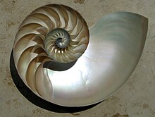
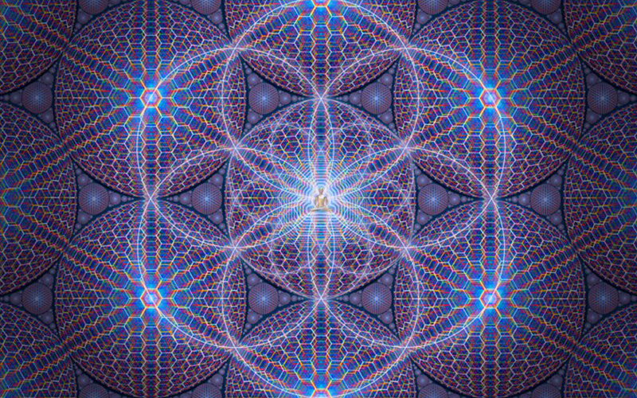

Sacred Geometry
By Robert Aura Freitag . Oct 31 2025
Sacred geometry ascribes symbolic and sacred meanings to certain geometric shapes and certain geometric proportions. [1] It is associated with the belief of a divine creator of the universal geometer. The geometry used in the design and construction of religious structures such as churches, temples, mosques, religious monuments, altars, and tabernacles has sometimes been considered sacred. The concept applies also to sacred spaces such as temenoi, sacred groves, village greens, pagodas and holy wells, Mandala Gardens and the creation of religious and spiritual art.
According to Stephen Skinner, the study of sacred geometry has its roots in the study of nature, and the mathematical principles at work therein.[5] Many forms observed in nature can be related to geometry; for example, the chambered nautilus grows at a constant rate and so its shell forms a logarithmic spiral to accommodate that growth without changing shape. Also, honeybees construct hexagonal cells to hold their honey. These and other correspondences are sometimes interpreted in terms of sacred geometry and considered to be further proof of the natural significance of geometric forms.
Representations in art and architecture
Geometric ratios, and geometric figures were often employed in the designs of ancient Egyptian, ancient Indian, Greek and Roman architecture. Medieval European cathedrals also incorporated symbolic geometry. Indian and Himalayan spiritual communities often constructed temples and fortifications on design plans of mandala and yantra. Mandala Vaatikas or Sacred Gardens were designed using the same principles.Many of the sacred geometry principles of the human body and of ancient architecture were compiled into the Vitruvian Man drawing by Leonardo da Vinci. The latter drawing was itself based on the much older writings of the Roman architect Vitruvius.
